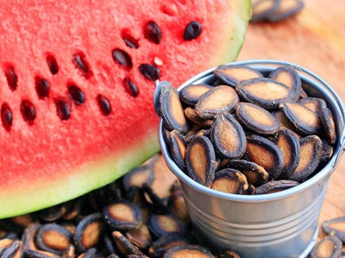

At True Roots, we believe that wellness begins with what you consume. Our range of cold-pressed oils, nutrient-rich seeds, and naturally processed powders is thoughtfully sourced and carefully crafted to preserve purity, taste, and nutrition.
By partnering with trusted farmers who follow sustainable and chemical-free practices, we ensure that every True Roots product carries the authenticity of nature. From kitchen essentials to superfoods, our mission is to provide healthier choices that nourish your body and support a balanced lifestyle.
Every product is rooted in purity and crafted to retain natural nutrition and flavor.
We work hand-in-hand with farmers who share our vision for sustainable and organic living.